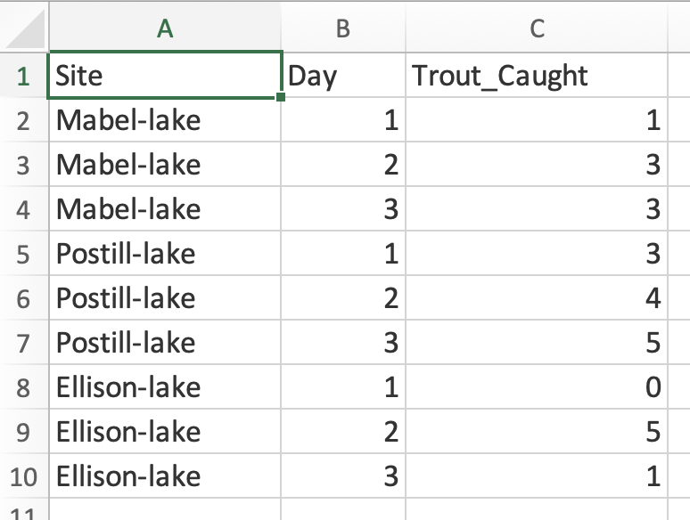
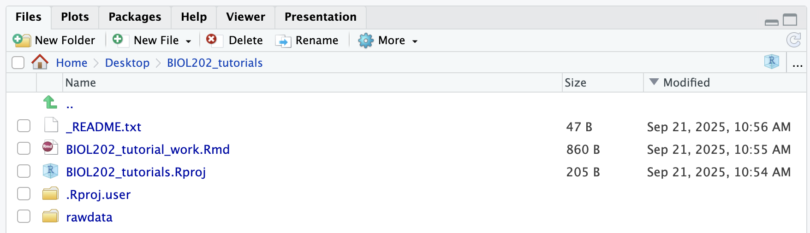

4 Preparing and importing Tidy Data
Tutorial learning objectives
In this tutorial you will:
- Review how to format your data
- Learn how to save a file in CSV (comma-separated values) format
- Learn how to import a CSV file from a website into a
tibblein R
- Learn how to import a CSV file from a local directory into a
tibblein R
- Learn how to get an overview of the data and variables in your
tibble
Importing data should be a straightforward task, but this is not always the case; sometimes data files are not formatted properly, so you need to be careful to check what you import.
Here, you’ll learn (or review) how to format your own data files according to best practices, so that you or others will have no problems importing them.
It is assumed that if you are collecting data during a project, you’ll likely enter them on your computer using a spreadsheet software program like Excel.
Note
PAUSE: Before starting any data collection and data-entry, ask yourself: how should I organize the spreadsheet for data-entry?
The short answer: according to TIDY formatting principles…
4.1 Tidy data
Review the Biology Procedures and Guidelines document chapter on Tidy data.
There you’ll learn how to arrange and format your data within a spreadsheet. The “Tidy” example provided would look like this in Excel:
Tip
If you’d like a longer, more in-depth read about “tidy data”, see Hadley Wickham’s “R for Datascience” online book, linked here.
If you wish to import and analyze data that have not been formatted according to tidy principles, then the most transparent and computationally reproducible way to reformat the data is to do so by coding within R, rather than using software like Excel. The process of reformatting / rearranging data is called data wrangling, and is mostly beyond the scope of this course.
If you’re curious about data wrangling, the dplyr package provides all the tools for data wrangling. Its associated cheatsheet is available at the package’s vignette website.
4.2 Import a CSV file from a website
In previous tutorials we’ve already seen how to import CSV files from the web. As always, the first step is to load the packages we need. readr supplies the import functions, and dplyr and ggplot2 supply the wrangling and plotting tools we use later in this tutorial.
library(dplyr)
library(ggplot2)
library(readr)The readr package includes the handy read_csv function.
You can view the help file for the read_csv function by typing this into your command console pane (bottom left) in RStudio:
?read_csvYou’ll see that the function has many optional “arguments”, but in general we can use the default values for these.
NoteWhy learn this, when the course data come in a package?
For the course’s own datasets you can just use data(students), and most tutorials do exactly that. But the data you collect will not arrive in an R package — it will be a CSV file you made. Importing a CSV is therefore a core skill, and this tutorial is where you learn it.
Here we use a copy of the course data hosted online so you can practise the real thing.
If the file you wish to import is located on the web, then we need to provide the “URL” (the web address) to the read_csv function, in double quotation marks:
students <- read_csv("https://raw.githubusercontent.com/ubco-biology/BIOL202-lab-tutorials/main/csv_data/students.csv")
Warning
PAUSE: Did you get an error like this?
Error in read_csv(…) : could not find function “read_csv”
This happens if you forgot to load the readr package!
The default behaviour of the read_csv function is to include a printout of the type of variable housed in each column of the dataset. For example, when importing the students dataset, the function gives a printout showing that there are three “character” variables (denoted chr) — R reads categorical variables in from a CSV as character variables — and three dbl, or double precision, floating point format numeric variables.
CautionActivity
Take a minute to check out this good overview of how R handles numeric variables.
You can tell R to not provide this information by including the argument show_col_types = FALSE within the read_csv code. Like so:
students <- read_csv("https://raw.githubusercontent.com/ubco-biology/BIOL202-lab-tutorials/main/csv_data/students.csv",
show_col_types = FALSE)We have now imported the data and stored it in a local object called “students”. The object is called a “tibble”, which you can think of as a special kind of spreadsheet. More information on “tibbles” can be found here.
Note
The CSV copies of the course datasets are all stored at the same URL location, specifically: “https://raw.githubusercontent.com/ubco-biology/BIOL202-lab-tutorials/main/csv_data/”. (note that clicking on this URL will not load a website). To import any of them, copy that path and append the file name. For example, the full path to the birds.csv file would be “https://raw.githubusercontent.com/ubco-biology/BIOL202-lab-tutorials/main/csv_data/birds.csv”.
These CSVs exist so you can practise importing. In the tutorials that follow, we use data(birds) instead, which is simpler and does not need an internet connection.
ImportantCharacter versus factor
Notice that read_csv gives you character variables for the categorical columns, whereas data(students) gives you factor variables. A factor is R’s type for a categorical variable with a known, fixed set of categories, and it remembers the order of those categories — which matters later, when we compare group means.
The datasets in the biol202 package have already been converted to factors for you, with sensible category orders. When you import your own CSV, that conversion is a step you do yourself.
Often you’ll need to import data from a locally stored CSV file, rather than from the web. You’ll learn how to do this shortly. First: how does one create a CSV file?
4.3 Create a CSV file
Before we create or save any data files on our local computer, we should first create a directory (folder) called “rawdata” to store them.
Let’s create the new directory in our “BIOL202_tutorials” working directory. To do this, use the dir.create function in R, as follows:
dir.create("rawdata")Once you run this code, you’ll see the new directory appear in the Files pane in the bottom-right of RStudio. It might look something like this:

Note
The folder is called “rawdata” because the data stored there will be the unedited, raw version of the data, and any files therein should NOT be altered. Any changes or edits one makes to the datasets should be saved in new data files that are saved in a different folder called “output”, which we’ll create later.
Let’s create a data file to work with.
Steps to create and save a CSV file
- Open up Excel or any other spreadsheet software and enter values in the spreadsheet cells exactly as shown in the Excel example in Figure 5.1 from the Tidy Data section above
- You should have one row with the 3 variable names (“Site”, “Day”, “trout_caught”), one in each column, then nine rows of data
- Save the file as a CSV file by selecting (MAC) File > Save As > and in the drop down list: CSV UTF-8 (Comma separated), and Windows File > Save as type > CSV UTF-8 (comma separated)
- Name it “trout.csv”, and save it within the newly created “rawdata” folder
Now we’re ready to try importing the data into a “tibble”.
4.4 Import a local CSV file
You can find additional help on importing different types of files at the Data Import Vignette, which includes a cheatsheet.
Steps to import a local CSV file
We’ll use the “trout.csv” file that we created previously.
And we’ll make use of the here package that we were introduced to in an earlier tutorial.
Let’s load the package:
library(here)
Note
New tool: Pipes or “%>%” are implemented in the magrittr package, which dplyr loads for you. In brief, pipes allow us to string together a series of functions, and we’ll use them frequently in tutorials.
Here we’ll use a pipe to help import the data file.
Let’s see the code first, then explain after:
trout <- here("rawdata", "trout.csv") %>%
read_csv()- First we have the name of the object (a “tibble”) that we wish to create, “trout”.
- Then you see the assignment operator “<-”, which tells R to assign whatever we’re doing to the right of the operator to the object “trout”.
- Then we have the
herefunction, which is taking two inputs: the name of the directory we wish to get something from (“rawdata”), and then the name of the file we wish to do something with, here “trout.csv”). - Then we have a pipe “%>%”, which tells R that we’re not done coding yet - there’s more to come on the next line…
- Lastly, we use the
read_csvfunction, whatever came before the pipe is what is fed to theread_csvfunction.
Go ahead and run the chunk of code above to create the “trout” object.
Next we’ll learn how to get an overview of the data stored in a tibble object.
4.5 Get an overview of a dataset
When you import data it is always a good idea to immediately get an overview of the data.
Key questions you want to be able to answer are:
- How many variables (columns) are there in the dataset?
- How many observations (rows) are in the dataset?
- Are there variables whose data are categorical? If so, which ones?
- Are there variables whose data are numerical? If so, which ones?
- Are there observations missing anywhere?
As we learned in the “Preparing and formatting assignments” tutorial, the skimr package has a handy function called skim_without_charts that provides a good overview of a data object. This is a rather long function name, and in fact the main function is called skim. However, by default, skim includes small charts in its output, and we don’t want that presently, hence the use of skim_without_charts.
Let’s load that package now:
library(skimr)And get an overview of the trout dataset, again using the pipe approach:
trout %>%
skim_without_charts()| Name | Piped data |
| Number of rows | 9 |
| Number of columns | 3 |
| _______________________ | |
| Column type frequency: | |
| character | 1 |
| numeric | 2 |
| ________________________ | |
| Group variables | None |
Variable type: character
| skim_variable | n_missing | complete_rate | min | max | empty | n_unique | whitespace |
|---|---|---|---|---|---|---|---|
| site | 0 | 1 | 10 | 12 | 0 | 3 | 0 |
Variable type: numeric
| skim_variable | n_missing | complete_rate | mean | sd | p0 | p25 | p50 | p75 | p100 |
|---|---|---|---|---|---|---|---|---|---|
| day | 0 | 1 | 2.00 | 0.87 | 1 | 1 | 2 | 3 | 3 |
| trout_caught | 0 | 1 | 2.78 | 1.79 | 0 | 1 | 3 | 4 | 5 |
A lot of information is provided in this summary output, so let’s go through it:
- The Data Summary shows the name of the object, the number of rows, and the number of columns
- Column type frequency shows how many columns (variables) are of type “character”, which is equivalent to “categorical”, and how many are “numeric”
- Group variables shows if there are any variables that are specified as “grouping” variables, something we don’t cover yet.
- Then it provides summaries of each of the variables, starting with the character or categorical variables, followed by the numeric variables
- Each summary includes a variety of descriptors, described next
- The “n_missing” descriptor tells you how many observations are missing in the given variable. In the “trout” dataset we don’t have any missing values
- The “n_unique” descriptor for categorical variables indicates how many unique values (categories) are in that variable; for the “Site” variable in the “trout” dataset there are 3 unique values
- The descriptors for the numeric variables include the mean, standard deviation (sd), and the quantiles
Now you have what you need to answer each of the questions listed above!
One additional function that is useful during the overview stage is head. This function just gives you a view of the first 6 rows of the dataset:
# we can use head(trout), or the pipe approach:
trout %>%
head()
#> # A tibble: 6 × 3
#> site day trout_caught
#> <chr> <dbl> <dbl>
#> 1 Mabel-lake 1 1
#> 2 Mabel-lake 2 3
#> 3 Mabel-lake 3 3
#> 4 Postill-lake 1 3
#> 5 Postill-lake 2 4
#> 6 Postill-lake 3 5When you use head on a “tibble”, like we have here, it outputs another “tibble”, in this case 6 rows by 3 columns. But recall that the full “trout” dataset includes 9 rows and 3 columns.
4.6 Tutorial practice activities
This activity will help reinforce each of the key learning outcomes from this tutorial.
Steps
You are going to take measurements of the lengths (in mm) of your thumb, index finger, and middle finger on each hand; but don’t start measuring yet!
First:
- Create a new R Markdown document for this practice activity. This is where you’ll record the procedures you use for this practice activity
- As we’ve learned in previous tutorials, one of the first steps we should do is include a code chunk in the markdown document in which we load any packages we’ll need.
- Include a code chunk to load the packages used in the present tutorial
- Save the R Markdown document in your root “BIOL202_tutorials” directory, and provide it an appropriate file name.
- Open a new blank spreadsheet in Excel
Note
Before taking the measurements, think about how you can make your measurement procedure reproducible. Where exactly are you measuring from and to on each digit? Are you using a ruler? What’s your measurement precision? Whatever approach you take, make sure you type it out clearly in your R Markdown document, so that someone else could repeat it.
- Also before you start measuring, think about how you’ll organize the data in the spreadsheet, including how many variables you’ll have, what to name those variables, and how many rows or observations you’ll have.
HINT: Even before you start measuring, most of your data sheet should be filled with values, and when you type in your 6 measurements, these should be entered in a single column.
- Once you’ve organized the spreadsheet, and even before you start entering the digit measurements, save it as a CSV file into your “rawdata” folder, remembering to use an appropriate file name
- Once you’ve typed out the methods in your markdown document, you can start taking measurements and recording them in the spreadsheet
- Once you’ve finished entering the data, save the spreadsheet again, then quit Excel.
Note
Now would be a good time to create and edit a “_README.txt” file for your new “rawdata” folder.
Now you’re ready to import the data into R.
- In your R Markdown document, include a code chunk to import the data.
Now you’re ready to get an overview of the data.
- In your R Markdown document, include a code chunk to get an overview of the dataset.
Once you’ve confirmed that each of the code chunks work in your R Markdown document, you’re ready to knit!
- Knit your document to PDF.
All done!